Telas 10 e 11 • reformulação visual
Tela 10: o mapa 2×2 e a constelação 3D dão lugar a uma comparação editorial em três blocos, com o Kizuna como protagonista e uma faixa de síntese. Tela 11: os cartões e o radar 3D dão lugar a uma matriz executiva de riscos (com linha expansível) e a um roadmap horizontal de quatro marcos.
10.1 • O cenário competitivo (1920 × 1080)
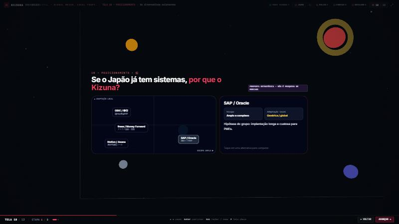

10.2 • A proposta de posicionamento (1920 × 1080)
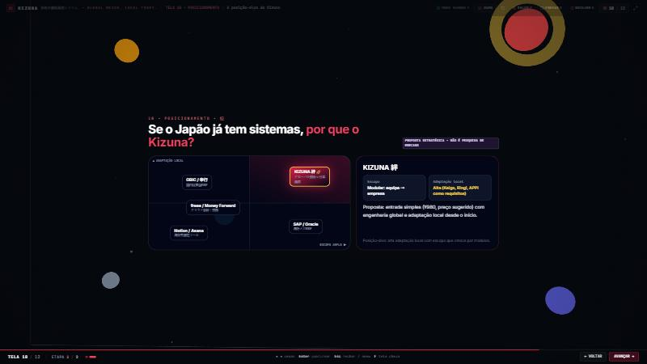

11.1 • Matriz de riscos (1920 × 1080)
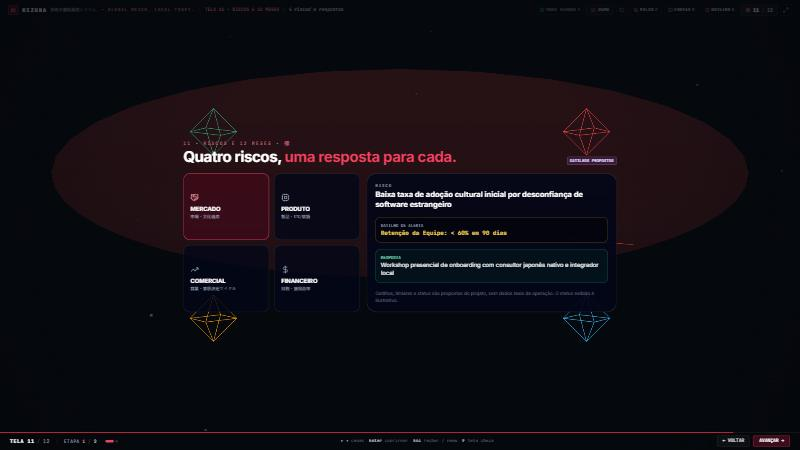
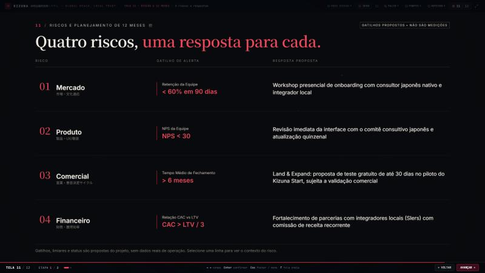
11.2 • Roadmap de 12 meses (1920 × 1080)
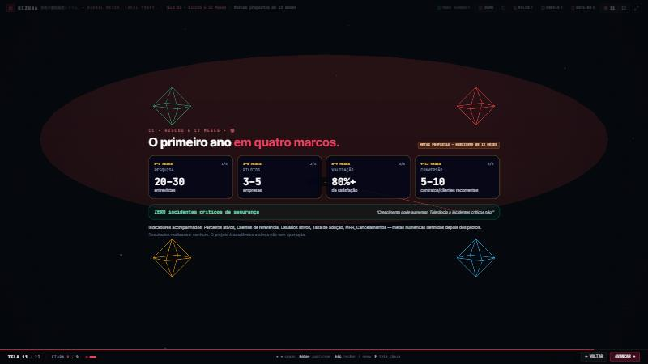
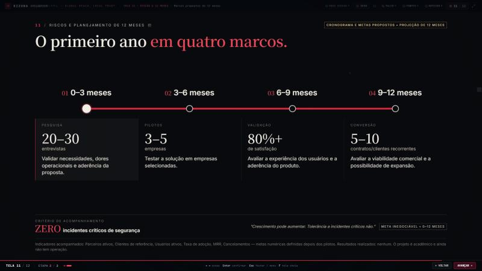
10.1 (1024 × 768)
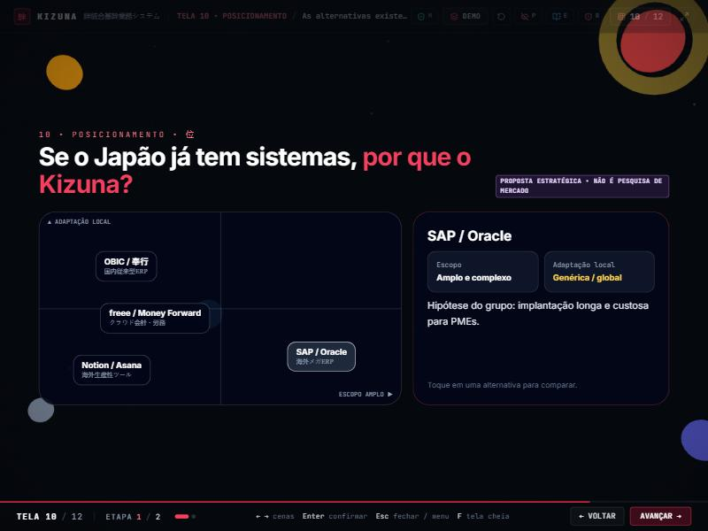
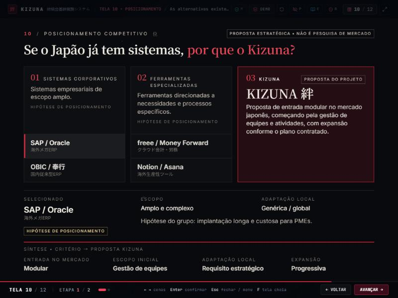
11.2 (1024 × 768)
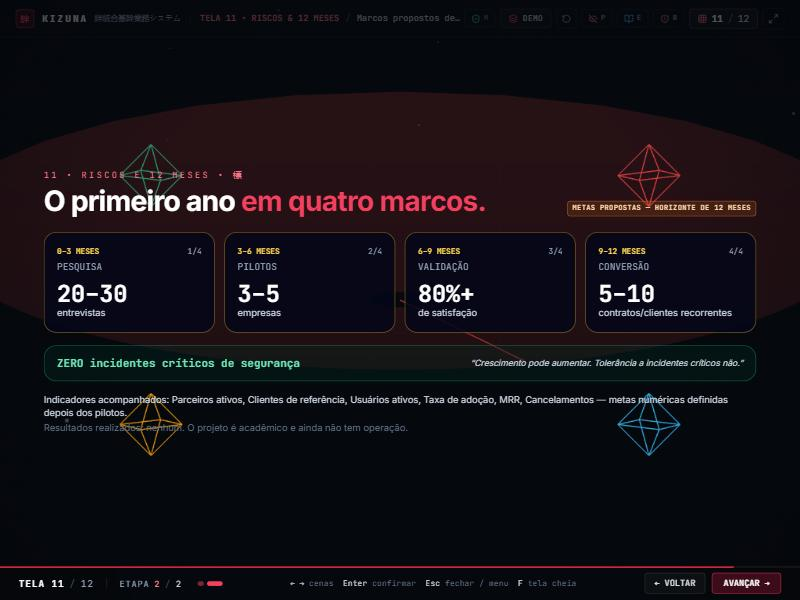
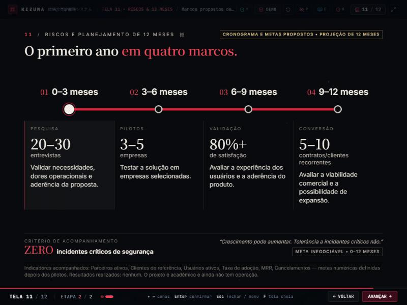
Interações e outras resoluções (depois)

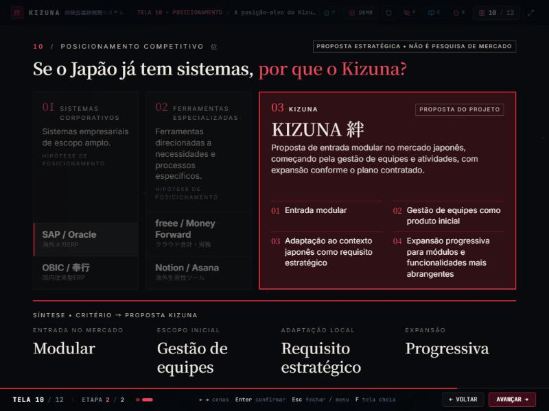
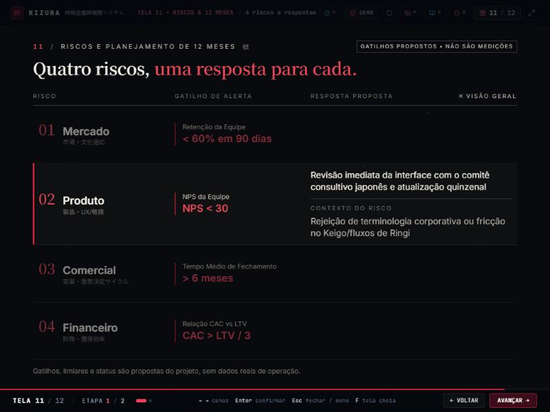
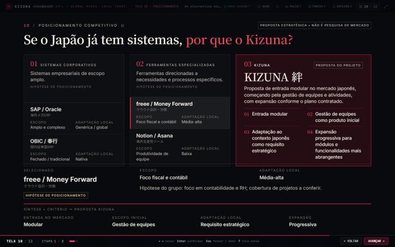
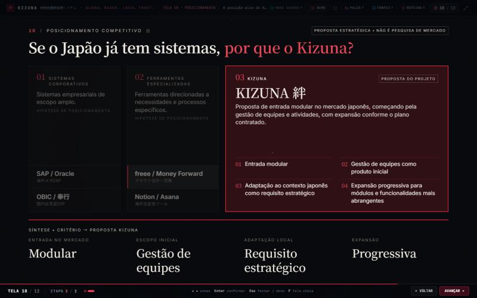
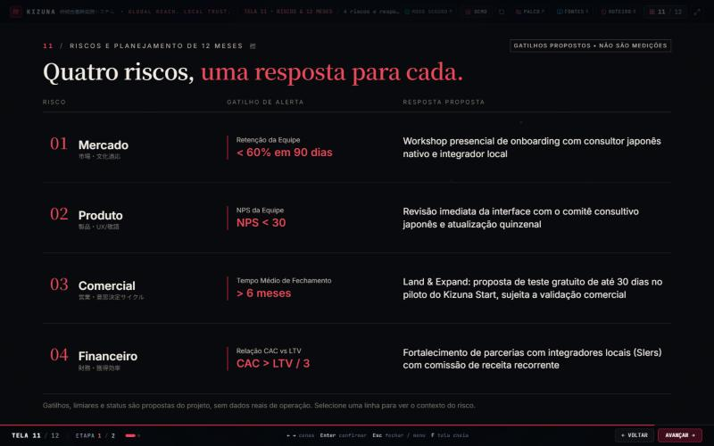
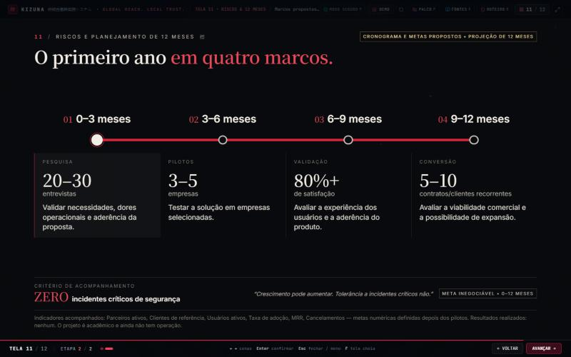
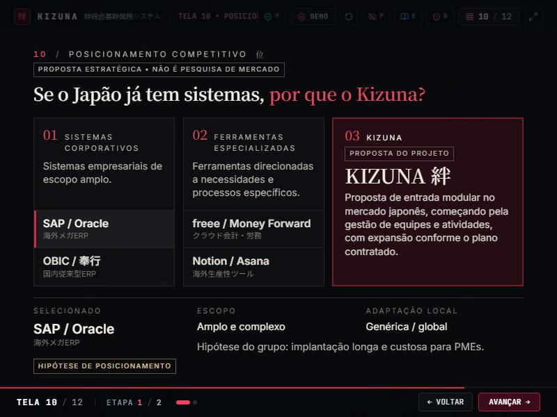
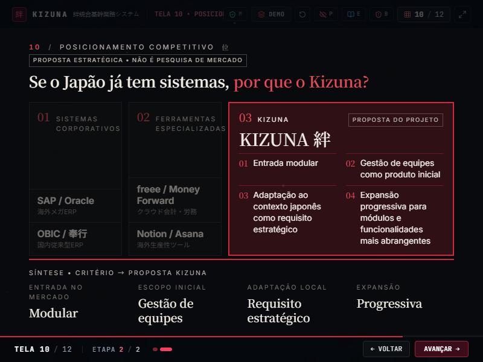
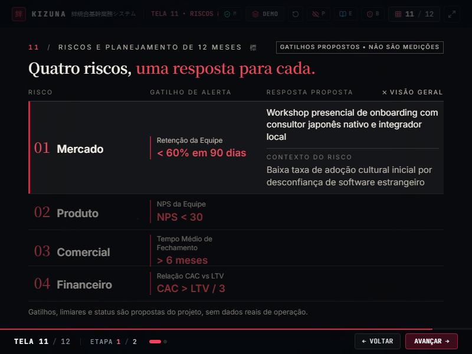
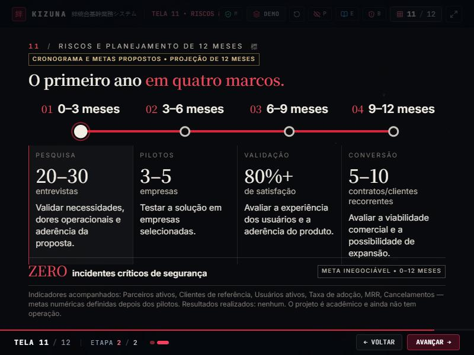